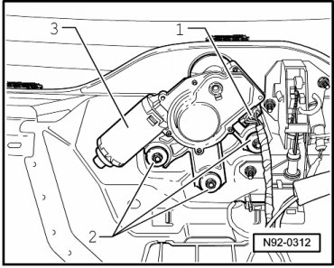
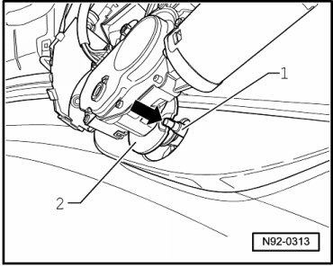
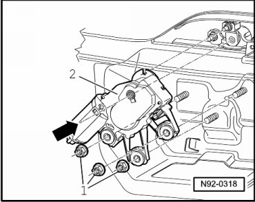

Rear Window Wiper Motor
Rear Window Wiper Motor
CAUTION!
When disconnecting and connecting the battery, always perform the work procedure as described in the repair information --> [ Battery, One-Battery Layout, Disconnecting and Connecting ] Battery, One-Battery Layout, Disconnecting and Connecting. Not adhering to sequence will result in the deactivation of Main Battery Switch -E74- and subsequent damage to electrical system components.
• Rear window must remain closed when removing and installing.
Special tools, testers and auxiliary items required
• Torque Wrench (V.A.G 1331/)
Removing
- Remove wiper arm --> [ Rear Window Wiper Arm ] Rear Window Wiper Arm.
- Disconnect battery --> [ Battery, One-Battery Layout, Disconnecting and Connecting ] Battery, One-Battery Layout, Disconnecting and Connecting.
- Remove the lower rear lid trim.
- Disconnect connector - 1 - from Rear Window Wiper Motor (V12) - 3 -.

- Remove nuts - 2 -.
- Remove Motor for rear window wiper (V12) - 3 -.
Installing
Install in reverse order of removal, noting the following:
Motor for rear windshield wiper (V12) must be aligned during installation so that drive pin - 1 - of eccentric lever engages in hole - arrow - of control disc.

• If the position of drive pin - 1 - on eccentric lever does not line up to control disc on Rear Window Wiper Motor (V12) - 2 - - arrow -, turn wiper arm shaft from outside. Do not twist control disc of Rear Window Wiper Motor (V12) - 2 - under any circumstances.
- Place the rear window wiper motor (V12) - 2 - on the rear lid so the drive pin on the eccentric engages in the control disc on the motor.

- Center Motor for rear window wiper (V12) - 2 - to window module - arrow - using a suitable centering drift with 5 mm diameter.
• As a centering drift, e.g. a commercially available drill with a diameter of 5 mm and a length of at least 75 mm can be used. When using a drill, there must be no burrs on the shaft.
- Install the rear window wiper motor (V12) - 2 - on the rear lid with the hex nuts - 1 -.
- Tighten the hex nuts - 1 - to the specification given in the assembly overview --> [ Rear Window Wiper System Assembly Overview ] Rear Window Wiper System Assembly Overview.
- Install the lower rear lid trim.
- Install wiper arm --> [ Rear Window Wiper Arm ] Rear Window Wiper Arm.